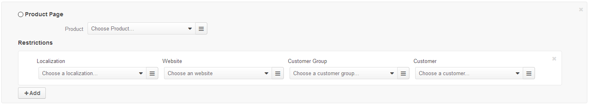

Product page node is a direct link to the product details in OroCommerce Store Front.
To add a product page node to the menu on the OroCommerce Store Front:
Select the Add Product Page in the Content Variants list.
The following section shows:
Select the product from the list. To use search, start typing the product name or SKU in the box. To use filtering, click on the bars, and select the filtering conditions in the Manage filters section.
This step applies only to the content nodes with more than one content variant.
When your product page is not selected as a default variant for the content node, there is a Restrictions section beneath the selected product. In this section, you can define the condition when the product details override the default content variant. See Configure Content Visibility section for more information.
Click Save when you are done filling in the web catalog content node or keep adding the content variants.